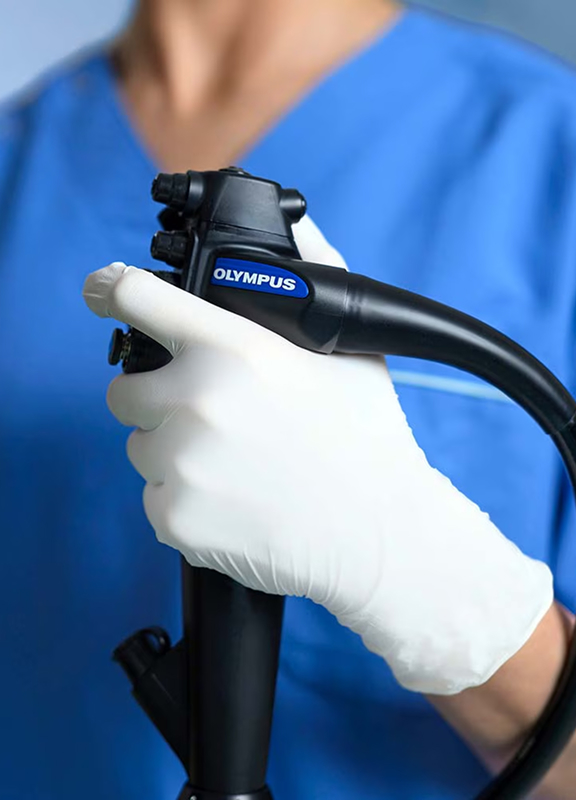
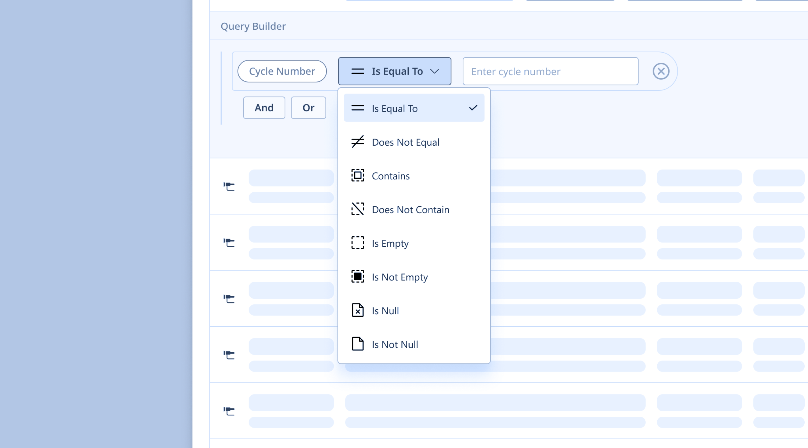
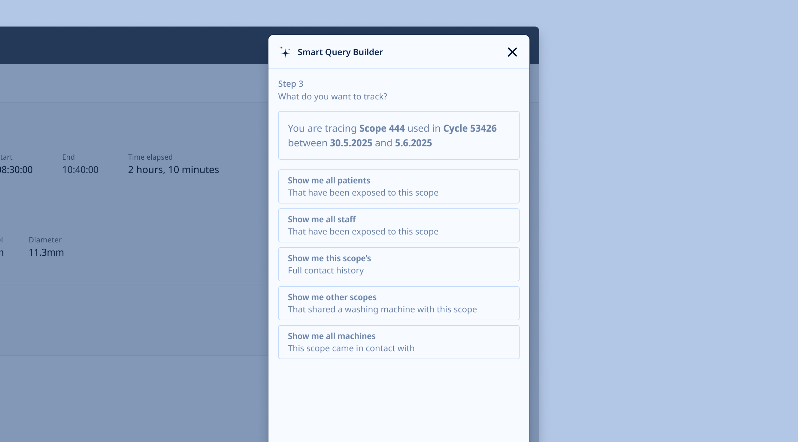
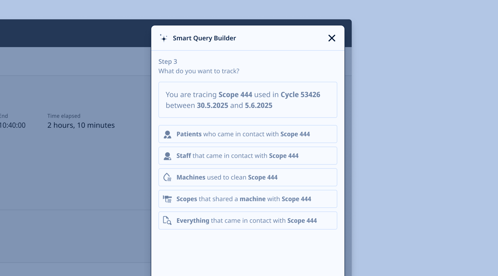
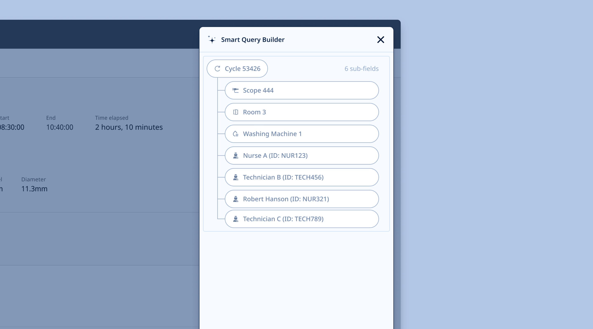
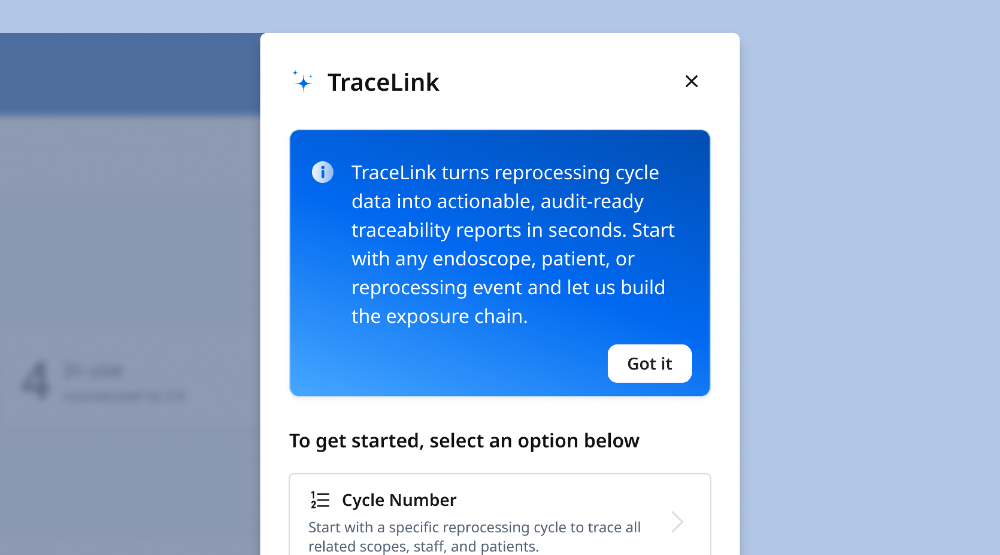
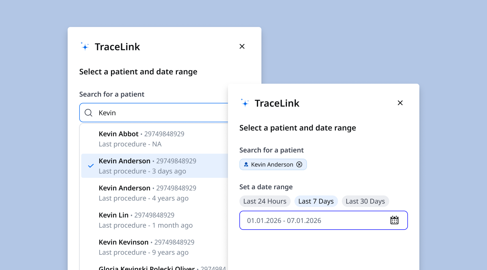
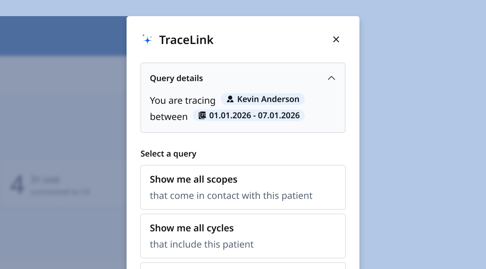
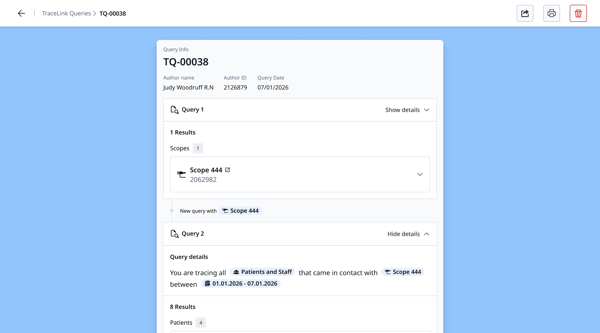

Case study / Olympus
Making clinical traceability data accessible at the point of care
At Olympus I led design on a traceability search tool that let clinical staff retrieve reprocessing records in seconds, with no SQL knowledge, no training, and no paper ledgers.

Background
A few things to know before diving in.
1
Reprocessing
Endoscopes are used on multiple patients and must be rigorously cleaned between each use. This specialized sanitization process is called reprocessing.
2
Documentation
Every step of a reprocessing cycle must be documented. Regulatory guidelines are strict, and compliance is not optional.
3
Structured Storage
Documented steps produce data records that become critical evidence when a scope needs to be traced, such as after a potential patient exposure event.
4
Scope Trace
A scope trace follows the paper trail of a specific endoscope to determine who and what it came into contact with. Speed and accuracy here can have direct patient safety implications.
The situation
Documentation is still overwhelmingly stuck in an analog world
Reprocessing documentation is required by law, but no digital solution had managed to stick on either the capture or retrieval side. Olympus was well-positioned to solve this problem, but previous attempts had failed. In the meantime, clinical staff were still managing records by hand: paper logs, shared spreadsheets, and physical ledgers.
The problem I set out to solve
How might we make traceability data accessible to clinical staff at the moment they need it most?
The task
Design a retrieval interface for a high-stakes, low-frequency use case
Olympus hardware was generating valuable data. The infrastructure to capture it was in place. The missing piece was a surface that made that data usable: something that could hold up under pressure, in a clinical setting, for a user encountering it for the first time.
The constraints
1
No technical knowledge required. Clinical staff should be able to query data without SQL or database experience.
2
AI is off the table for the MVP due to privacy concerns and infrastructure constraints, but the design should lay the foundation for a natural language layer down the road.
3
The solution must fit into clinical workflows and the mental models we observed in the field.
4
The product must work correctly on first contact, with no training, under pressure.
5
Build enough confidence in the tool that endoscopy departments can retire their paper ledgers
The action
Several directions were explored and tested before a pattern emerged

The first explorations centered on a visual query builder: a structured UI that would let users construct SQL queries without writing any code. It tested poorly. The cognitive overhead was too high, and the interaction model had no relationship to how clinical staff actually thought about the problem.
Field conversations with nurses made clear that they reasoned in plain language, not in database logic. That shifted the direction toward natural language input. From there, through repeated testing, something unexpected surfaced: the questions nurses needed to ask were not as varied as assumed. The system was closed, the data was structured, and the range of meaningful queries was finite. Once that was clear, the direction became obvious.
Wireframes we used for testing




The breakthrough
Testing revealed a finite, mappable query space
Across every session, the same types of questions kept surfacing. The full range of possible queries turned out to be finite and mappable. That meant the interaction could be structured: a guided, wizard-style flow that encoded every permutation without requiring the user to construct a query from scratch.

The result
The MVP: a controlled, stepped interface that eliminated ambiguity
The prototype walked users through a series of guided steps, each narrowing the query until the system had enough information to return a precise result. There were no open fields, no ambiguous inputs. Every path through the wizard was accounted for.
In testing, nurses completed scope traces quickly and with confidence, often on first contact. The qualitative feedback was consistent: the tool felt familiar, even to users who had never seen it before. That was the signal we were after.




Outcome
The MVP tested well with clinical users and received strong endorsement from product leadership.
The query-builder architecture we shipped solved the immediate problem and opened a longer road. As a structured, deterministic layer sitting between user intent and private patient data, it became the foundation any future natural language interface would route through.